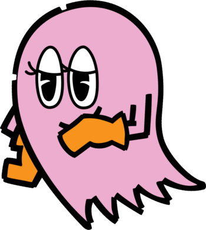

Pinky
Pinky (ピンキー Pinkii) is one of the four main ghosts in the Pac-Man series. She represents as the only female ghost and likes to be pretty. She attempts to ambush Pac-Man by moving parallel to him. In certain continuities, Pinky has been shown to have a crush on Pac-Man, which normally goes unreciprocated. She is good friends with Blinky, Inky, and Clyde.
While originally one of the main antagonists in the first Pac-Man arcade game, her role has largely been diminished to being a secondary antagonist or an ally in recent incarnations.
Characteristics
Appearance
Pinky is a pink-colored ghost. She has big eyes, but her slanted eyelids and eyelashes partially obscure them. She is typically limbless within games, but some incarnations show her with arms, sometimes with gloves as well (either orange or purple-colored). She is sometimes seen wearing makeup.
In the TV series and Pac-Land, Pinky wears a hat, and has a "tough guy" personality. In Pac-Man Party and Ghostly Adventures, she has shoulder-length hair and blue eyes, and looks somewhat younger; her arms are also stubbier
In Pac-Man and the Ghostly Adventures, Pinky is a magenta-colored ghost.
Personality
Pinky is quite feminine and calm, but is just as mischievous as the rest of the Ghost Gang, and won't hesitate to stop Pac-Man if he tries to stop their antics. When chasing Pac-Man/Ms. Pac-Man in the maze, her strategy is to ambush them rather than chase them. Even though she is not as fast as Blinky, this strategy makes her one of the more persistent and tricky ghosts.
In Pac N' Roll, she is shown to be quite cunning and mean, having been the one who came up with the plan to summon Golvis and ruin the Power Pellet Harvest Festival.
In Pac-Man and the Ghostly Adventures, Pinky is shown to have a crush on Pac-Man. As with the other members of the original Ghost Gang, she is now an ally and friend of Pac-Man rather than an enemy.
Gender
In Pinky's earliest American appearances, the character was often shown as being male, most prominently in the 1982 animated series. The only American 80s media showing Pinky as female were the Pac-Man Trading Cards, of all things.
Seemingly starting in the late 80s, Pinky began appearing more feminine within promotional artwork. Both male and female designs for the character were used inconsistently throughout the 90s; by the 2000s all games showed Pinky as a woman. The general consensus overall is that the character is female.
In Japan, on the other hand, Pinky has almost always been portrayed as female. Her first appearance depicting her female was on the flyers for the 1982 game, Super Pac-Man. The only game where she was depicted as male was Pac-Land, which used the same sprites for the ghosts regardless of country.